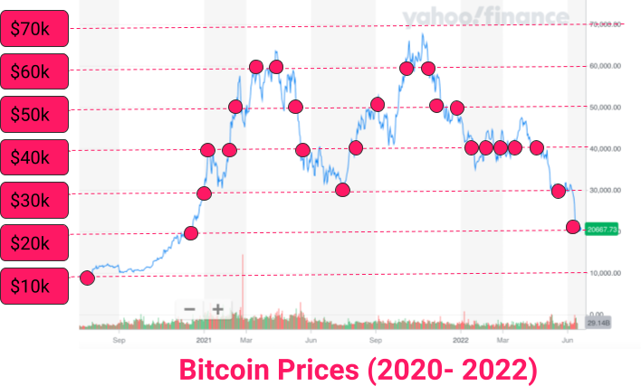

<!DOCTYPE html>
<html lang="en">

<head>
  <meta charset="utf-8" />
  <meta name="viewport" content="width=device-width, initial-scale=1.0, maximum-scale=1.0, user-scalable=no" />

  <title>Economic Basics</title>
  <link rel="shortcut icon" href="./../../../assets/favicon.ico" />
  <link rel="stylesheet" href="./../../../dist/reset.css" />
  <link rel="stylesheet" href="./../../../dist/reveal.css" />
  <link rel="stylesheet" href="./../../../assets/styles/PBA-theme.css" id="theme" />
  <link rel="stylesheet" href="./../../../css/highlight/shades-of-purple.css" />

  <link rel="stylesheet" href="./../../.././assets/styles/custom-classes.css" />

</head>

<body class="site">
  <header class="site-header">
    <!-- This logo is a link only on the watching server, not the production build -->
      
  </header>
  <main class="reveal">
    <article class="slides">
      <section  data-markdown><script type="text/template">

# Economic Basics
</script></section><section  data-markdown><script type="text/template">
<pba-cols>
<pba-col>
<pba-flex center>

#### Cryptography

- _Guarantees_ about behavior of _machines_
- Objective
- Deterministic behavior
- Toolbox that tells which actions computers can do securely.

</pba-flex>
</pba-col>
<pba-col>
<pba-flex center>

#### Economics

- _Predictions_ about behavior of _humans_
- Subjective
- Preference-driven behavior
- Toolbox that tells which actions humans are actually taking.

</pba-flex>
</pba-col>
</pba-cols>

🤖$~~~$ 🤝 $~~~$👪

<aside class="notes"><ul>
<li>Note that cryptographic primitives offer guarantees while economic principles offer vague predictions.</li>
<li>They often fail for individuals but mostly hold for the collective.</li>
<li>Crypto &amp; Econ pair well! Together they are the toolbox to design unstoppable systems.</li>
<li>They have a great symphony: where cryptography&#39;s has boundaries, economics offers solutions and vice versa.</li>
</ul>
</aside></script></section><section  data-markdown><script type="text/template">
## Designing for Human Behavior

> An incentive is a bullet, a key:<br/>an often tiny object with astonishing power to change a situation.<br/>-- Steven Levitt --

<aside class="notes"><ul>
<li>Human behavior is driven by economic incentives.</li>
<li>Human behavior creates societies.</li>
<li>Carefully designing incentives lays the ground for functioning systems.</li>
<li>You might be asked to implement certain protocols, which you have to judge if they make sense / can be improved.</li>
<li>Blockchain space is economics on steroids.
Trustlessness mostly mean that we do not need to trust any individual human or institution, but we certainly need to verify that the economics are sound and cause desired behaviors on the collective.</li>
</ul>
</aside></script></section><section  data-markdown><script type="text/template">
## Why are economic concepts<br/>important?

<pba-flex center>

Economic principles (and their limits) are important to ...

- help make decisions (in your daily life, or otherwise);
- model & reason about how others make decisions;
- better understand (crypto-)economic protocols;
- understand the broader context of Web3/blockchain.

</pba-flex>
</script></section><section  data-markdown><script type="text/template">
## Outline

<pba-flex center>

- **Lesson** (around 60 minutes)
  - [Demand & Supply](#demand--supply): Market Equilibrium, Decreasing Marginal Utility.
  - [Market Forms](#market-forms): Monopoly and Oligopoly vs. Perfect Competition.
  - [Economics of Specialization](#economics-of-specialization): Comparative Advantage, Opportunity Costs, Gains from Trade.
  - [Behavioral Biases](#behavioral-biases): Where human decision making might be different than traditional economic theories predict.
- **Discussion & Workshop** (around 120 minutes)
  - Discussions to foster and apply concepts we learned.
  - Hands-on applications.

</pba-flex>
</script></section><section  data-markdown><script type="text/template">
## Demand & Supply

A common model to help predict and rationalize the price<br/>which emerges from a market.

Can be used to (gu)estimate the quantity<br/>of produced goods vs. their market prices.

<aside class="notes"><p>Examples:</p>
<ul>
<li>A famous artist dies and her art increases in price.</li>
<li>An unusually nice summer reduces hotel prices in popular vacations to escape the heat.</li>
</ul>
</aside></script></section><section  data-markdown><script type="text/template">
## Why do we discuss this?

- Demand and supply are helpful to understand market equilibrium.
- Understanding market equilibrium is crucial both,
  - to make sense of what happens in current blockchain markets
  - and to design new markets.

<aside class="notes"><ul>
<li>Example: a famous artist dies and her art increases in price.</li>
</ul>
</aside></script></section><section  data-markdown><script type="text/template">
## Demand

**Law of demand**: When prices increase, quantity demanded of a good (generally) decreases.

<aside class="notes"><ul>
<li>And vice versa.</li>
<li>Exception are &quot;Veblen goods&quot; where demand increases when price increases.
These are typically luxury goods that signal something (e.g. status, reputation) in addition to being useful to consumption.
Examples are jewelry, luxury cars, etc.<ul>
<li>The demand for a Veblen good may increase when the price increases.
This is not a contradiction to the law of demand because the good&#39;s social value depends on the price; i.e., the good &quot;changes&quot; and becomes more desirable as the price increases.</li>
</ul>
</li>
</ul>
</aside></script></section><section  data-markdown><script type="text/template">
## Demand Schedule


<aside class="notes"><p>What influences the aggregate market demand?
This is the sum of all individual&#39;s demand curves.</p>
<p>In this example we consider the number of scoops sold in a day in an ice cream store, as a function of the price per scoop.</p>
</aside></script></section><section  data-markdown><script type="text/template">
## Influences on demand?

<pba-flex center>

- Price (Demand moves along the curve)
- Size of consumer base
- Average disposable income of consumer base
- Price of substitution goods
- Preferences prevalent within consumer base
- Expectations prevalent within consumer base

</pba-flex>

<aside class="notes"><ul>
<li>In the ice cream example, a substitution good could be frozen yoghurt: if its price goes down, the demand for ice cream will decrease.</li>
<li>If people&#39;s appetite for ice cream increases (perhaps via advertisement), the demand will increase.</li>
<li>In people expect a shortage of ice cream in the near future, the demand will increase immediately.</li>
</ul>
</aside></script></section><section  data-markdown><script type="text/template">
## Supply

- **Law of supply**: Keeping other factors constant: If the price of a good increases, the quantity supplied also increases

(because suppliers can make more profit!).

<aside class="notes"><ul>
<li>That is, assuming that suppliers manage to sell all produced goods at said price.</li>
<li>For example, if the ice cream price increases the store will hire a second employee to sell more scoops per hour.</li>
<li>As another example, some petroleum deposits are easier and cheaper to extract than others, so some deposits will be extracted only if the oil price is above a certain threshold.</li>
</ul>
</aside></script></section><section  data-markdown><script type="text/template">
## Demand meets Supply


- What happens when Price is higher than the Eq. Price?
- What if the Quantity is lower than the Eq. Quantity?
- Moving either supply or demand leads to new Eq.

<aside class="notes"><ul>
<li>Combining the previous graph of market demand with supply we get this graph.
The vertical axis is price per scoop, and in the horizontal axis we have demand in red, and supply in blue.</li>
<li>Where the curves meet we obtain a point of equilibrium, which establishes a market quantity and a market price.</li>
<li>If price is higher than equilibrium price, there is more supply than demand, so some goods remain unsold, and sellers will be forced to reduce the price to get rid of their stock.
Similarly if the price is lower than equilibrium price, there is more demand than supply, which leads to shortages of the good; sellers will notice this and increase the price.
Hence, we always converge to the equilibrium price.</li>
<li>Similarly, if the quantity supplied is too low, there is a business opportunity to supply more unit of the good and make a profit, so eventually someone will increase the supply quantity.</li>
</ul>
</aside></script></section><section  data-markdown><script type="text/template">
## What did we learn?

- Demand/supply model forces in markets and can be used to estimate equilibrium quantity/price.
- All other things being equal:
  - demand decreases with increasing price
  - supply increases with increasing price
- There are different factors influencing supply & demand curves.
  - Some shift the equilibrium on the curve
  - Others move the entire curves.
</script></section><section  data-markdown><script type="text/template">
## Market forms

### (Or: why monopoly bad?)

- Typically, economists distinguish between three market forms.
  - Perfect competition: Many firms, many consumers.
  - Oligopoly: Few firms, many consumers.
  - Monopoly: One firm, many consumers.
- The more competition a firm faces, the less market power it has.
- Market power: ability to affect the price (through choosing a certain production level).

<aside class="notes"><ul>
<li>Special form of Oligopoly is the Duopoly with two firms, something that we see later.</li>
</ul>
</aside></script></section><section  data-markdown><script type="text/template">
## Market Form Examples

- Monopoly:
  - Postal services in many European countries.
  - Railway services in many European countries.
- Oligopoly:
  - Cloud provider (AWS, Google, ...)
  - Mobile phone service.
- Perfect Competition:
  - Consumer products with low barrier to entry (e.g., kebab stand in Berlin 🥙🙈, espresso bar in Italy ☕️🙈)
</script></section><section  data-markdown><script type="text/template">
## Why discuss this?

Current web2 landscape consists of several firms with a lot of market power in their respective market segment.

We want to understand, from an economic perspective, why too much market power is not a good thing.
</script></section><section  data-markdown><script type="text/template">
## Perfect Competition

- Under perfect competition ...
  - there are so many firms that a single firm's production quantity does not affect market price.
  - the marginal costs (cost of one additional unit) of production equals the market price.
  - firms have 0 profit.

<aside class="notes"><ul>
<li>This makes sense: The firm produces up to the point where an additional unit costs exactly what it gets for it on the market.</li>
<li>Notice that having the market price be equal to the marginal production costs is pretty surprising, as it is ideal from a point of view of society welfare, even though every firm is acting selfishly.</li>
<li>In this perfect world, firms will have zero economic profit, meaning they make just enough money to cover production costs and keep the company running.</li>
</ul>
<!-- TODO : reduce math notation by explicitly stating things, don't assume people know what a derivative is of f'(x) is notation for it. --></aside></script></section><section  data-markdown><script type="text/template">
## Monopoly

<pba-flex center>

- Monopolist: single seller of the good or service, serves the entire market.
- Market characterized by a high barrier of entry (e.g. big investment, legal restrictions).
- Monopolist is therefore sole price-setter and serves only to maximize their own profits.

This leads to sub-optimal pricing and sub-optimal society welfare: consumers either pay more than they should ("monopolist tax") or are excluded from market.

</pba-flex>

<aside class="notes"><ul>
<li>In this case, it is <em>not</em> true that the market price equals the marginal production cost, but it can be arbitrarily higher.</li>
<li>In this sense, a monopolistic market does not maximize welfare: notice our notion of society welfare is not about the <em>fairness</em> of the market price by itself, but about the fact that it could be lower and the good could reach more people if the market was not monopolistic.</li>
<li>For example, think of drinking water: the demand curve is pretty much horizontal, meaning that people are willing to pay arbitrarily high prices for it if there is no cheaper alternative.
If there is a single supplier and no state regulation, the production costs will be minimal but the price could be ridiculously high.
(This is an example of an <em>inelastic demand</em>: one that is not very affected by price.)</li>
<li>On the other hand, the market for ice cream is probably elastic.
If there is a single seller, they can turn ice cream into a luxury good that very few people can enjoy, while most people are kicked out of the market.</li>
</ul>
</aside></script></section><section  data-markdown><script type="text/template">
## Oligopolies

- Oligopolies are somewhere between monopolies and perfect competition.
- Because of the competition between firms
  - prices are lower, and
  - overall market participation is higher.
</script></section><section  data-markdown><script type="text/template">
## What did we learn?

- Markets differ in how much market power the firms possess.
- Economics typically distinguishes between three forms (ordered by increasing market power):
  - Perfect competition: many firms in the market.
  - Oligopoly: few firms in the market.
  - Monopoly: one firm in the market.
- The problem of monopoly is the result of an inefficiently high price.
</script></section><section  data-markdown><script type="text/template">
## Economics of Specialization

#### _(or: why bother trading at all?)_

> It is the maxim of every prudent master of a family, never to attempt to make at home what it will cost him more to make than to buy.<br/>-- Adam Smith, 1776 --

<aside class="notes"><ul>
<li>In this part, we take a closer look at the following concepts:<ul>
<li>Comparative advantage.</li>
<li>Opportunity costs.</li>
<li>Gains from trade.</li>
</ul>
</li>
</ul>
</aside></script></section><section  data-markdown><script type="text/template">
## The economic question

- Empirical puzzle: many countries trade even though one has an advantage in producing many of the traded goods.
- E.g., the US is well-equipped to cheaply produce both
  - complex computer chips, and
  - agricultural goods (e.g., potatoes).
- However, the US specializes in producing the former and importing many agricultural goods.
- Question: Why do countries specialize; why do they trade?

<aside class="notes"><ul>
<li>Polkadot allows for specialized blockchains (so-called parachains) to share security and trustless communicate.</li>
<li>We want to understand, from an economic perspective, the gains that arise from such specialization.</li>
</ul>
</aside></script></section><section  data-markdown><script type="text/template">
## Opportunity costs

- Whenever you do something you refrain from doing something else that is possibly profitable.
- The foregone profit is you opportunity cost.
- E.g., you could either watch a football match or do some consulting work to earn 200$ per hour.
- So, your opportunity cost of watching the match is 400 dollars!
- **Conclusion**: There is no such thing as a free lunch.

_Opportunity costs are everywhere! Name some others?_

<aside class="notes"><ul>
<li>As another example, my brother won a contest and got two tickets to the final match in the world cup, which he attended with his wife.
Before entering the stadium in Qatar, he saw that people where willing to pay up to $10000 per ticket, yet he preferred to attend the game.
Hence, their opportunity costs was 20 thousand dollars.
They could have bought a new car!</li>
</ul>
</aside></script></section><section  data-markdown><script type="text/template">
## Comparative advantage

- Back to our trade example:
  - Suppose the US can produce ten times more chips than potatoes per hour.
  - Suppose there is another country (a potential _exporter_) that can produce ten times more potatoes than chips per hour.
- The US has a _comparative_ advantage over the exporter at producing chips.
  - The US has lower _opportunity_ costs of producing chips (in terms of foregone potatoes).
  - That is, to produce one chip the US gives up much less produced potatoes than the exporter would.
- By the same observation, the exporter has a comparative advantage at producing potatoes.

<aside class="notes"><ul>
<li>The exporter has lower <em>opportunity</em> costs of producing potatoes (in terms of foregone chips).</li>
<li>That is, to produce one potato the exporter gives up much less produced chips than the exporter would.</li>
</ul>
</aside></script></section><section  data-markdown><script type="text/template">
## Comparative advantage II

- If both the US and the exporters focus on their comparative advantage, then total welfare is higher than in a situation of autarky!
- Why?
  - Suppose both the US and the exporter require both chips and potatoes.
  - Situation A: both the US and the exporter divide their time equally between producing chips and producing potatoes.
  - Situation B: the US only produces chips and the exporter only produces potatoes.
  - Total production of chips and potatoes is higher in Situation B!
- **Specialization result**: If, in Situation B, the countries can trade with each other they are both better off than in Situation A.

<aside class="notes"><ul>
<li>Autarky: an economic system where a country limits trade and aims to be self sufficient.</li>
<li>Notice in situation A, the US may end up with both more chips and potatoes than the other country, because the US has a comparative advantage on both goods.
So you could say that the US is &quot;better off&quot; relative to the other country. But the point is that in situation B, both countries are simultaneously better off than they would be in situation A.</li>
<li>Hence limiting trade would have an opportunity cost to both countries.</li>
</ul>
</aside></script></section><section  data-markdown><script type="text/template">
## Behavioral Biases

- For a long time economic theory was built on the assumption that all actors are _rational_.
  - No regard for fairness, altruism, equality.
  - All available information is considered.
  - No influence of emotions.
- This works well in many circumstances (e.g., on an aggregate level or assuming highly rational actors like firms executives) but in many it doesn't.
- Most humans are prone to Behavioral Biases and are influenced by social preferences.
</script></section><section  data-markdown><script type="text/template">
## Behavioral Economics

- Behavioral economics is mainly concerned with the bounds of rationality of economic agents.
- Influenced by psychological aspects such as emotions, cognition as well as cultural and societal factors.
- Psychologist Daniel Kahnemann received the 2002 Nobel Prize for _Prospect Theory_, a fundamental theory in Behavioral Economics.
- PT models the fact that individuals assess their losses differently than their gains.
</script></section><section  data-markdown><script type="text/template">
## Behavioral Economics

#### _Behavior is not random!_

- **Confirmation Bias** Decision makers focus on information that cater to their prior belief / opinion and neglect other information.
- **Sunk Cost Fallacy** Instead of cutting losses, decision makers continue to pour resources into a failed endeavour.
- **Herding Effect** People follow the crowd without making their own informed decision.
- **Gambler's Fallacy** In many situations probabilities of repeated events are independent from each other.
  Often decision makers fail to understand this.
- **Default Effect** People tend to stick with pre-selected choices.
- **Overconfidence** People overestimate their abilities.

<aside class="notes"><ul>
<li><p>Overconfidence: If asked, more than 50% of people think they drive above average.
BUT has also positive effects.
Sometimes overconfident people are better than others and statistically perform better in practice.</p>
</li>
<li><p>My brother would not sell their two tickets to the final for 20 thousand dollars, but he wouldn&#39;t buy the tickets for 20 thousand dollars either.
This is an example of the default effect.</p>
</li>
</ul>
</aside></script></section><section  data-markdown><script type="text/template">
## Behavioral Economics

> Simply put, the stock market is a creation of man and therefore reflects human idiosyncrasy.<br/>-- Ralph Nelson Elliott --
</script></section><section  data-markdown><script type="text/template">
<!-- .slide: data-background-color="#000" -->

# Break (10 minutes)
</script></section><section  data-markdown><script type="text/template">
<!-- .slide: data-background-color="#4A2439" -->

# Classroom Discussions

<aside class="notes"><ul>
<li>Roughly 20 minutes</li>
</ul>
</aside></script></section><section  data-markdown><script type="text/template">
## Behavioral Biases

- Which biases might be responsible for the following situations?
- How can we mitigate the impact of those biases?
</script></section><section  data-markdown><script type="text/template">
## Situation 1:

> Warren Buffett announces that he increased his exposure to Apple by buying more stocks.
> The price of AAPL goes up.

<aside class="notes"><ul>
<li>Herding effect</li>
<li>Cannot be in the hope of a price response by Buffett&#39;s trade because it already happened.</li>
<li>Self-fulfilling prophecy</li>
<li>Maybe still rational?</li>
</ul>
</aside></script></section><section  data-markdown><script type="text/template">
## Situation 2:

> A stock investor bought a big position in Disney at around 100 USD per share.
> Then, the scandal unfolds and the price plummets.
> The investor keeps buying in at 80 USD, 50 USD and finally at 5 USD, 3 USD and 1 USD.
> When a friend asks him to stop he keeps arguing to recover the losses by "buying the dip" and to "further reducing the average buying price".

<aside class="notes"><ul>
<li>Sunk Cost Fallacy</li>
<li>Learn to accept losses</li>
</ul>
</aside></script></section><section  data-markdown><script type="text/template">
## Situation 3:

> Peter wants to buy a new smartphone and fancies the new iPhone.
> Mentally, he is already looking forward to finally buy it, but a friend urges him to do some more research.
> He agrees and is reading through articles that pop up after googling "Why you should buy the new iPhone".

<aside class="notes"><ul>
<li>Confirmation Bias</li>
<li>Mitigating by actively looking outside the echo-chamber that is just catering to your opinion.</li>
</ul>
</aside></script></section><section  data-markdown><script type="text/template">
## Situation 4:

> A Swiss energy company could increase the number of new renewable electricity contracts from 3% to 80-90% by pre-selecting the green option when customers were renewing their energy contracts.

<aside class="notes"><ul>
<li>Default effect</li>
<li>Is it always good?
People might consume more energy because they feel better about their contract, companies can exploit this effect &quot;default to accept all cookies&quot;.</li>
<li><a href="https://www.bbc.com/news/science-environment-56361970">https://www.bbc.com/news/science-environment-56361970</a></li>
<li><a href="https://www.nature.com/articles/s41562-021-01070-3.epdf?sharing_token=4HCcx-Aouj5gOGkD37i319RgN0jAjWel9jnR3ZoTv0MsXRMaQ2nk_xsjwawpA_drZ4p8HWONsx-i-1PN3ZRN0hxsKmhDtSpN5xn5qXXWcPCTjRQxPpY5yovJQehlrDn56a7Ff3-f5ESorQLlggQObIrxTOC9Y4nefV5OGXZRww9iZyuuvAOwV0kRLk12-rKINRixIpE45bF2ZtQQdPcWuA%3D%3D&amp;tracking_referrer=www.bbc.com">Paper</a></li>
</ul>
</aside></script></section><section  data-markdown><script type="text/template">
<!-- .slide: data-background-color="#4A2439" -->

## Where do you see yourself or others suffer from behavioral biases?

<aside class="notes"><p>Open class discussion.</p>
</aside></script></section><section  data-markdown><script type="text/template">
## Bitcoin Price Chart



> Based on what we’ve discussed about market equilibrium, why might the price of Bitcoin have peaked at `~$68,000` in December 2021?
> What market dynamics would have to have been true to hit that peak, and then what might have changed for the price to drop to the current price of `$21,000` only 6 months later?

<aside class="notes"><ul>
<li>Open discussion with students.
Answers to expect:<ul>
<li>Price movement over time.
I.e., the result of a Demand &amp; Supply curve over time.</li>
<li>There is a shift in demand by expectations, (aggregated) income etc. all the previous factors that we described</li>
<li>Interestingly: Here is no shift in Supply if the protocol is seen as the producer of bitcoin!
It is fixed.
However, the supply on the market does change.</li>
</ul>
</li>
<li>This discussion will lead to discussing where the demand of a token comes from.</li>
<li>If possible: Grab this again in the discussion of inflation (i.e., the supply is increasing but deterministic, especially its independent of price)</li>
<li>Where does demand come from?</li>
<li>Why should Bitcoin have value?</li>
</ul>
</aside></script></section><section  data-markdown><script type="text/template">
## Monopoly

- We have seen: Monopolists' market power leads to inefficient outcomes.
- In the model we considered, the monopolist chose too high a price, potentially reducing trade, and certainly reducing welfare.
- Web 2.0 is full of firms that have a monopoly-like position in their respective domain:
  - Google
  - Uber
  - AirBnb
  - ...
- How do these firms exert their market power, if not over price-setting?

<aside class="notes"><ul>
<li><p>transparency? (stealing tips!)</p>
</li>
<li><p>fees (uber, airbnb)</p>
</li>
<li><p>surge pricing (uber)</p>
</li>
<li><p>opaque auction mechanism (google in the case of online ads)</p>
</li>
</ul>
</aside></script></section><section  data-markdown><script type="text/template">
<!-- .slide: data-background-color="#4A2439" -->

# Activities
</script></section><section  data-markdown><script type="text/template">
## Activities Today & Tomorrow

- You can earn points by applying the concepts presented in this course to similar situations when playing with/against your colleagues.
- In session 2.1, 2.2 and 2.3, you can increase your budget (starting at 0) during several economic games.
- We have a total budget of $2250 for this.
- The budget is split between all the games that we play and total points earned by all of you are dynamically adjusted to correspond to the budget.
- In 2.3, there is a big final: You can use your earnings to bid for amazing NFTs by a professional artist in an experimental auction setting.
- Disclaimer: If a bug occurs and the reward points are messed up or something else goes wrong, we may intervene.
</script></section><section  data-markdown><script type="text/template">
## Tracking your payoff

- Your balance is tracked in a wallet app.
- The points are translated to USD after each game.
- **Keep your seed phrase and do not share it with others!**
- You can constantly check your balance by opening the wallet app link.

<aside class="notes"><ul>
<li>Completely trusted and centralized xD</li>
<li>If you leave your cookies you can simply log back in otherwise you need your seed phrase.</li>
</ul>
</aside></script></section><section  data-markdown><script type="text/template">
## Wallet Creation


<!-- #### https://academy.w3f.dev/room/academy_wallet -->
<!-- TODO Florian -- new link, probably no QR needed  -->
</script></section><section  data-markdown><script type="text/template">
# Everybody got a wallet?
</script></section><section  data-markdown><script type="text/template">
<!-- .slide: data-background-color="#4A2439" -->

# Make sure to have your Seed phrase for all games!
</script></section><section  data-markdown><script type="text/template">
<!-- .slide: data-background-color="#4A2439" -->

# No seed - No payoff!
</script></section><section  data-markdown><script type="text/template">
## Game 1: Ultimatum game

- You are randomly matched with another student in the classroom.
- The interaction is anonymous.
- Player 1 gets an endowment of 100 points.
- Player 1 can offer Player 2 between 0 and 100 points.
- Player 2 sees the offer and can decide to accept or reject the offer.
- If the offer is accepted, the endowment is split according to the offer.
- If the offer is rejected, both get 0 points.
- Budget for the game $500.
- There is no right or wrong here.
  It is your choice how to behave in this context!
</script></section><section  data-markdown><script type="text/template">
<!-- .slide: data-background-color="#4A2439" -->

# Game 1: Questions?
</script></section><section  data-markdown><script type="text/template">
## Let's start!


<!-- #### https://academy.w3f.dev/room/academy_ultimatum -->
<!-- TODO Florian -- new link, probably no QR needed  -->
</script></section><section  data-markdown><script type="text/template">
## Game 1: Discussion

- What were your strategies here?
- What do you think we would expect from rational players?
- Why did people offer something?
- What did we measure here?

<aside class="notes"><ul>
<li>What would we expect from rational players (they do not know the concept of Nash Equilibrium yet but intuitively they can argue).</li>
<li>What do you expect the data to look like?</li>
<li>Did we measure fairness?
No.</li>
<li>How could we measure fairness?<ul>
<li>Dictator game</li>
</ul>
</li>
<li>Talk about results in the literature:<ul>
<li>Many people offer 40-50%</li>
<li>Almost nobody offers more than 50%</li>
<li>Many people reject below 30%</li>
<li>This is not only because of the stakes.
There are experiments in Thailand and Indonesia where they play with half year salary.</li>
</ul>
</li>
</ul>
</aside></script></section><section  data-markdown><script type="text/template">
<!-- .slide: data-background-color="#4A2439" -->

# Game 1: Results!
</script></section><section  data-markdown><script type="text/template">
## Game 2: Cournot Competition

- Economic model
- Firms compete by setting quantities
- Identical product
- Demand always meets supply
- Named after French mathematician Augustin Cournot.

<aside class="notes"><ul>
<li>Game 1: Cournot Competition with 2 firms (players from the audience) for 10 rounds</li>
</ul>
</aside></script></section><section  data-markdown><script type="text/template">
## Game 2: Overview

- Cournot competition (Duopoly!)
- 2 firms (you play 1 firm!)
- Each of you individually set a quantity to produce.
- All units are sold, but the price decreases in the quantity.
- Repeated over 10 rounds
- Points accumulate and are added to your budget.
- Budget for the game: $500
</script></section><section  data-markdown><script type="text/template">
## Game 2: Rules


</script></section><section  data-markdown><script type="text/template">
<!-- .slide: data-background-color="#4A2439" -->

# Game 2: Questions?
</script></section><section  data-markdown><script type="text/template">
## Let's start!


<!-- #### https://academy.w3f.dev/room/academy_cournot -->
<!-- TODO Florian -- new link, probably no QR needed  -->
</script></section><section  data-markdown><script type="text/template">
## Game 2: Discussions

- What strategy did you employ?
- Did your behavior change over the rounds?
- What was the best choice for each firm?

<aside class="notes"><ul>
<li>Calculate equilibrium:</li>
<li>$\pi = P(Q) * q$</li>
<li>For Firm 1: $\pi = (60 - q_1 - q_2) * q_1$</li>
<li>solve for optimal $q_1$ -&gt; delta-pi / delta-q1 = -2q_1 - q_2 + 60 =! 0</li>
<li>q_1* = (60 - q_2) / 2</li>
<li>q_2* = (60 - q_1) / 2</li>
<li>q1* = (60 - (60-q1*)/2) / 2</li>
<li>= 30 - 15 + (q_1*/4) = q_1*</li>
<li>= q_1* = q_2* = 20</li>
<li>Show with example.
If firm 1 plays 20 then 19 leads to smaller payoff and 21 for other firm.</li>
</ul>
</aside></script></section><section  data-markdown><script type="text/template">
<!-- .slide: data-background-color="#4A2439" -->

# Game 2: Results!
</script></section><section  data-markdown><script type="text/template">
## Conclusion

- We learned:
  - fundamental economic concepts that are important to navigate the blockchain space.
  - a few behavioral biases that cause humans to behave suboptimally.
  - to transfer the concepts to the blockchain space.
  - experienced economic concepts ourselves by playing a cournot competition.
</script></section><section  data-markdown><script type="text/template">
## Further studying material

**Economics**

- [Polkadot Economics](https://research.web3.foundation/en/latest/polkadot/overview/2-token-economics.html) - Tokenomics of Polkadot

**Stablecoins**

- [Before Terra Luna collapse](https://www.coindesk.com/layer2/2022/04/22/built-to-fail-why-terrausds-growth-is-giving-finance-experts-nightmares/) - An article that warns about the risks of Terra Luna just two weeks before its collapse.
- [After Terra Luna collapse](https://thebittimes.substack.com/p/what-can-other-algorithmic-stablecoins?s=r) - Interesting information about how Terra luna collapsed.
- [Deep Dive into Collapse](https://github.com/adit313/TerraDeepDive)
</script></section><section  data-markdown><script type="text/template">
## Unused
</script></section><section  data-markdown><script type="text/template">
## The Problem with Monopoly

- Prices are higher and quantities will therefore generally be lower.
- However, perhaps the monopolist could produce more, sell for less and still make the same profit.
- There are consumers that would buy additional quantity at a slightly reduced price.
- Those consumers are left out and are not able to purchase / consume the good.
- The total welfare could be higher but monopolies "steal" rent from consumers.
- From a utilitarian perspective, total welfare should be maximized in a market.
  This does not happen in a monopoly.

<!-- TODO: reduce use of complete sentences, move to <aside class="notes"><p>speaker notes section and use phrases above instead. --&gt;</p>
</aside></script></section><section  data-markdown><script type="text/template">
## The Problem with Monopoly

Monopolies are bad because there are unrealized gains from trade!

- Often monopolies are deemed to be bad because they charge high prices to existing customers and that is seen as unfair.
- This is not the economic argument against monopolies.
  Economically, monopolies are bad because they prevent potential buyers from buying at all.
  If the price were lower, then the monopoly could serve more customers.
- Prices merely constitute a transfer.
  But transfers do not matter for the utilitarian who wants to maximize total welfare.

<!-- TODO: reduce use of complete sentences, move to <aside class="notes"><p>speaker notes section and use phrases above instead. --&gt;</p>
</aside></script></section><section  data-markdown><script type="text/template">
<!-- .slide: data-background-color="#4A2439" -->

# Questions
</script></section>
    </article>
  </main>

  <script src="./../../../dist/reveal.js"></script>

  <script src="./../../../plugin/markdown/markdown.js"></script>
  <script src="./../../../plugin/highlight/highlight.js"></script>
  <script src="./../../../plugin/zoom/zoom.js"></script>
  <script src="./../../../plugin/notes/notes.js"></script>
  <script src="./../../../plugin/math/math.js"></script>
  <script>
    function extend() {
      var target = {};
      for (var i = 0; i < arguments.length; i++) {
        var source = arguments[i];
        for (var key in source) {
          if (source.hasOwnProperty(key)) {
            target[key] = source[key];
          }
        }
      }
      return target;
    }

    // default options to init reveal.js
    var defaultOptions = {
      controls: true,
      progress: true,
      history: true,
      center: true,
      transition: 'default', // none/fade/slide/convex/concave/zoom
      slideNumber: true,
      plugins: [
        RevealMarkdown,
        RevealHighlight,
        RevealZoom,
        RevealNotes,
        RevealMath
      ]
    };

    // options from URL query string
    var queryOptions = Reveal().getQueryHash() || {};

    var options = extend(defaultOptions, {"width":1400,"height":900,"margin":0,"minScale":0.2,"maxScale":2,"transition":"none","controls":true,"progress":true,"center":true,"slideNumber":true,"backgroundTransition":"fade"}, queryOptions);
  </script>


  <script>
    Reveal.initialize(options);
  </script>
</body>

</html>
